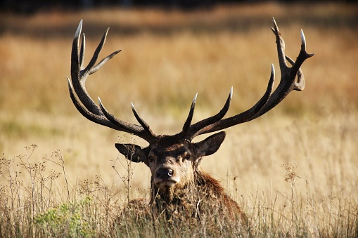

Cervo Vermelho
Cervus elaphus — família Cervidae
190
kg
18
anos
O cervo-vermelho é um dos maiores cervídeos e habita florestas e campos abertos. Os machos possuem galhadas que se renovam anualmente.

Galhadas imponentes e comportamento sazonal marcado pelo bramido no cio.
Sua dieta é composta principalmente por gramíneas, folhas e brotos. São animais crepusculares e altamente vigilantes.
A coloração varia com as estações, tornando-se mais espessa e escura no inverno para isolamento térmico.
“O bramido do cervo ecoa como um sino antigo chamando a floresta para acordar.”
- Surgiu: ~2 milhões de anos
- Tipo: Mamífero
- Idade Média: 18 anos
- Macho adulto: 190 kg
- Fêmea adulta: 120 kg
- Família: Cervidae
Espécie distribuída pela Europa, Ásia e partes do norte da África, introduzida também na Oceania.
O tamanho e a forma das galhadas são influenciados por idade, genética e dieta.